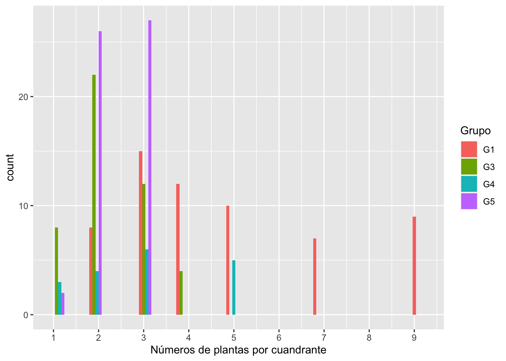
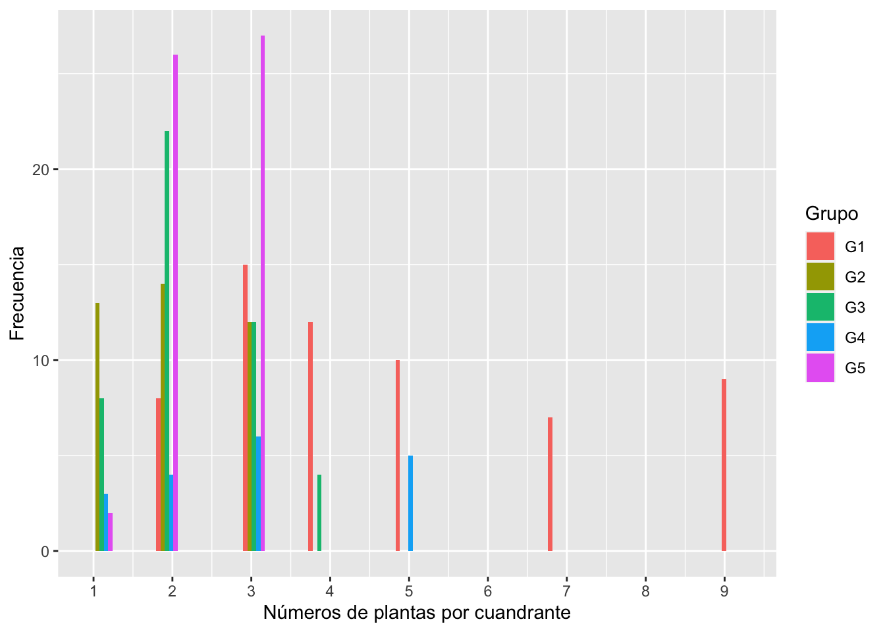

Se encontrará los datos de todos los grupos en el siguiente enlace DATOS
library(readr)
Intra_Specific_Comp_Ast <- read_csv("Intra_Specific_Comp_Ast.csv")library(ggplot2)
ggplot(Intra_Specific_Comp_Ast, aes(x=Num_Plantas, fill=Grupo))+
geom_histogram(position="dodge")+
scale_x_continuous(breaks = c(1:9))+
xlab("Números de plantas por cuandrante")
library(ggplot2)
ggplot(Intra_Specific_Comp_Ast, aes(Num_Plantas, Num_Inflorecencia, color=Grupo)) +
geom_point()+
geom_smooth(method ="glm", family="poisson")+
facet_wrap(~Grupo)
Model1=glm(Num_Inflorecencia~Num_Plantas+Grupo-1, data=Intra_Specific_Comp_Ast , family="poisson")
summary(Model1) # Estos valores estan en la escala de log_10##
## Call:
## glm(formula = Num_Inflorecencia ~ Num_Plantas + Grupo - 1, family = "poisson",
## data = Intra_Specific_Comp_Ast)
##
## Deviance Residuals:
## Min 1Q Median 3Q Max
## -7.0118 -2.2121 -0.3616 1.5109 7.3306
##
## Coefficients:
## Estimate Std. Error z value Pr(>|z|)
## Num_Plantas -0.06407 0.01049 -6.108 1.01e-09 ***
## GrupoG1 3.30220 0.05447 60.625 < 2e-16 ***
## GrupoG3 3.40816 0.03702 92.059 < 2e-16 ***
## GrupoG4 4.35394 0.04208 103.477 < 2e-16 ***
## GrupoG5 3.22761 0.03866 83.481 < 2e-16 ***
## ---
## Signif. codes: 0 '***' 0.001 '**' 0.01 '*' 0.05 '.' 0.1 ' ' 1
##
## (Dispersion parameter for poisson family taken to be 1)
##
## Null deviance: 24283 on 180 degrees of freedom
## Residual deviance: 1208 on 175 degrees of freedom
## AIC: 2103.9
##
## Number of Fisher Scoring iterations: 4exp(coef(Model1))## Num_Plantas GrupoG1 GrupoG3 GrupoG4 GrupoG5
## 0.9379406 27.1723629 30.2095117 77.7841172 25.2192233Como se interpreta?
Num_Plantas, por cada planta extra en el cuadrante, hay una redución de solamente .6 inflorescencia (1-.94). Por consecuencia en general no se vio mucha diferencia entre la producción de inflorescencia y la cantidad de plantas por cuandrante
Pero los diferentes muestreos (Grupos son distinctos).
Nota que para el primer grupo con una planta se espera 27 inflorescencia y por cada otra planta en el cuandrante se reduce de .6 inflorescencia. Por consecuancia en el primer grupo en un cuadrante de 5 plantas se observa en promedio 27.2 - .937 *5 = 22.5 inflorescencia
El calculo de como calcular la cantidad inflorescencia esperadas en un cuandrate de de 5 plantas en el grupo
27.2 - 0.935*5## [1] 22.525